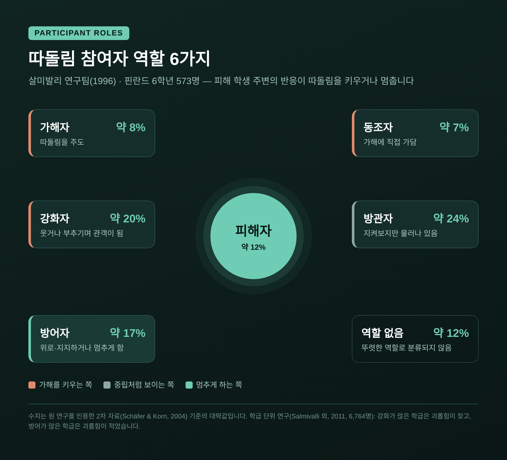
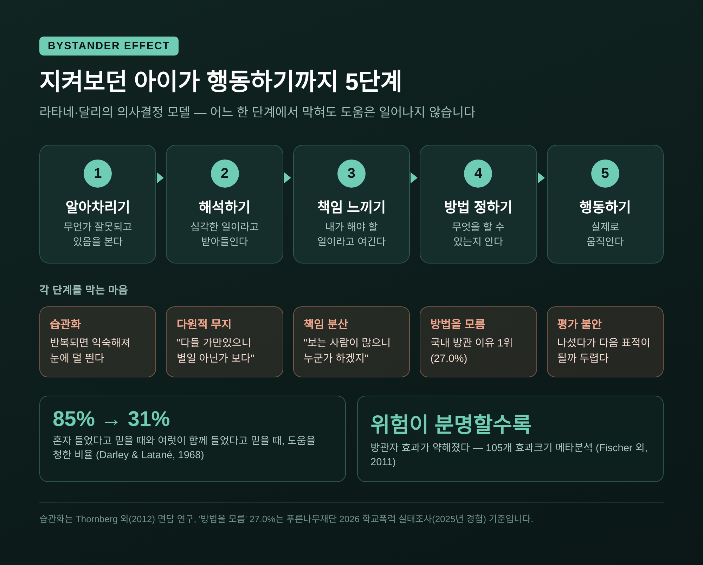
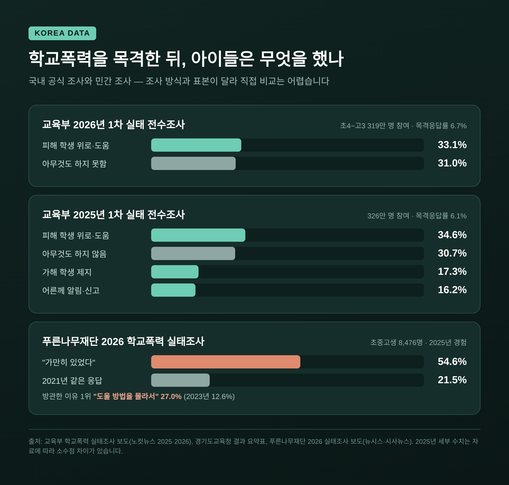
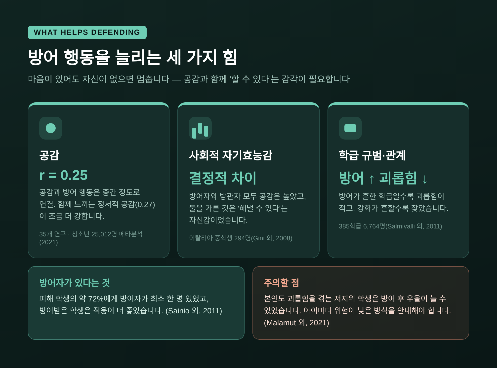
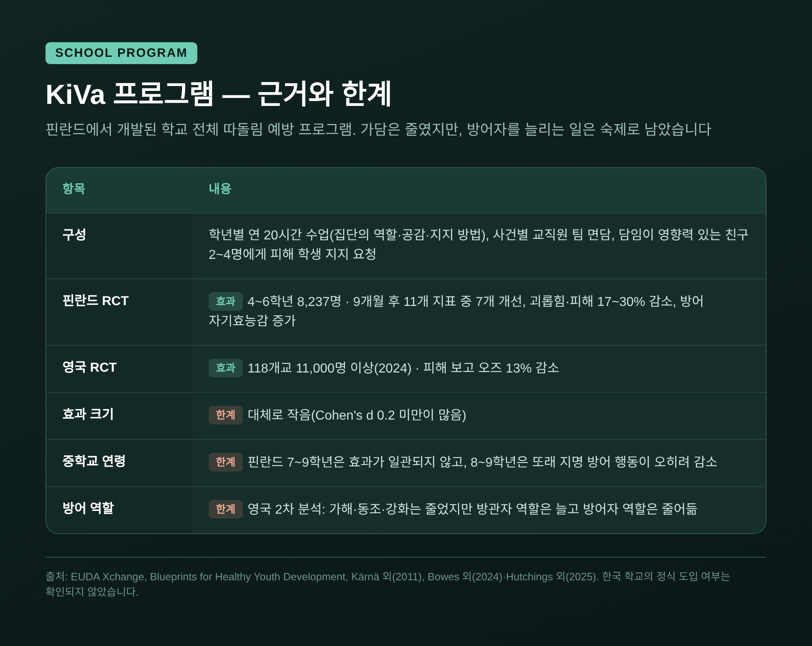
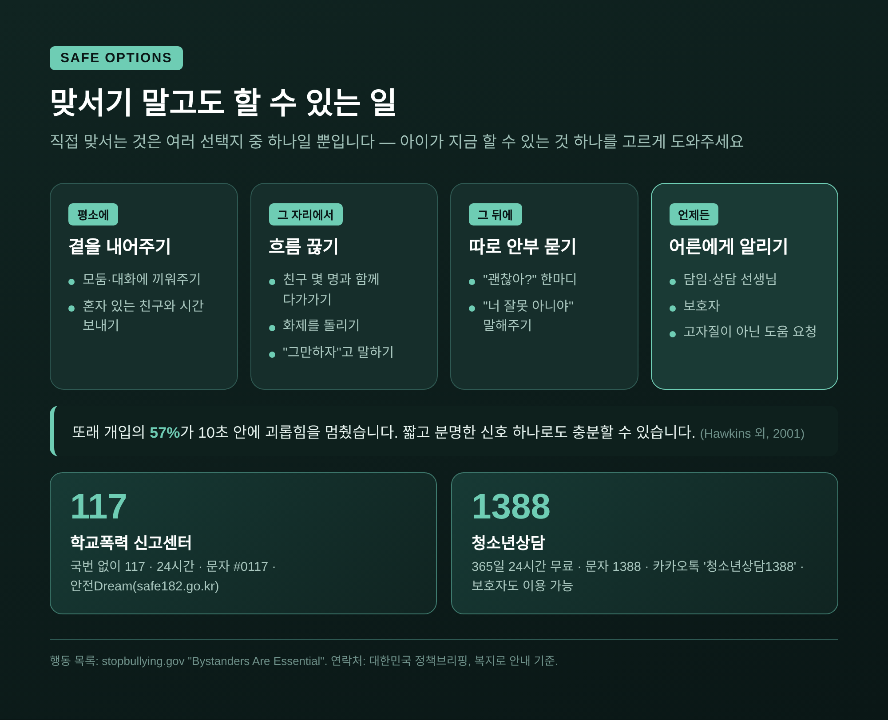

따돌림 방관자가 움직이도록 돕는 법 — 지켜보던 아이에게 필요한 것

오늘은 또래 따돌림 현장에서 '지켜보던 아이'에 관해 이야기해 보려 합니다. 따돌림 방관자는 왜 멈춰 서는지, 그리고 부모·교사·상담자가 그 아이를 어떻게 한 걸음 움직이게 도울 수 있는지를 연구와 국내 조사를 바탕으로 정리했습니다.
세 줄 요약
- 따돌림은 가해자와 피해자 둘만의 일이 아니라, 주변 아이들의 반응이 지속 여부를 좌우하는 집단 과정입니다.
- 아이들이 나서지 못하는 가장 흔한 이유는 무관심이 아니라 두려움과 '방법을 모름'입니다.
- 그래서 "맞서라"보다 피해 학생 곁에 있기, 따로 안부 묻기, 어른에게 알리기처럼 안전한 선택지를 구체적으로 알려주는 것이 먼저입니다.
■ 따돌림은 '둘'이 아니라 '교실 전체'의 일입니다
따돌림을 떠올리면 보통 가해 학생과 피해 학생만 그려집니다. 핀란드의 심리학자 크리스티나 살미발리 연구팀은 1996년, 이 그림에 빠진 사람들을 찾아냈습니다.
연구팀은 핀란드 6학년 573명을 조사해 따돌림에 관여하는 역할을 여섯 가지로 나눴습니다. 주도하는 가해자, 직접 가담하는 동조자, 웃거나 부추기는 강화자, 물러나 지켜보는 방관자, 피해 학생 편에 서는 방어자, 그리고 피해자입니다.
이 연구를 인용한 자료에 따르면, 강화자가 약 20%, 방관자가 약 24%로 가해자(약 8%)보다 훨씬 많았습니다. 방어자는 약 17% 수준이었습니다.
중요한 점은 강화자와 방관자의 반응이 가해 학생에게 일종의 '관객 반응'이 된다는 것입니다. 살미발리 연구팀이 2011년 385개 학급, 6,764명을 분석한 결과도 같은 방향이었습니다. 강화 행동이 많은 학급일수록 괴롭힘이 잦았고, 방어 행동이 많은 학급일수록 괴롭힘이 적었습니다.

■ 목격자는 거의 늘 있고, 짧은 개입이 자주 통합니다
캐나다 연구팀(Hawkins, Pepler, Craig, 2001)은 초등학교 운동장을 3년간 125시간 촬영해 분석했습니다. 또래가 현장에 있던 경우는 88%였습니다. 그러나 실제로 개입한 경우는 19%에 그쳤습니다.
눈여겨볼 대목은 그다음입니다. 또래가 개입했을 때, 효과를 판단할 수 있었던 사례의 57%에서 괴롭힘이 10초 안에 멈췄습니다. 개입이 길어질수록 효과는 오히려 떨어졌습니다.
거창한 영웅적 행동이 아니라, 짧고 분명한 신호 하나가 흐름을 바꿀 수 있다는 뜻입니다.
■ 왜 보고만 있을까 — 방관자 효과의 세 가지 마음
사회심리학에는 '방관자 효과'라는 고전적 개념이 있습니다. 1968년 달리와 라타네의 실험에서, 누군가 발작을 일으키는 소리를 혼자 들었다고 믿은 참가자는 85%가 도움을 청하러 나섰습니다. 여러 명이 함께 듣고 있다고 믿은 참가자는 31%만 그렇게 했습니다.
이 현상은 보통 세 가지 마음으로 설명합니다.
- 책임 분산 — 지켜보는 사람이 많을수록 "누군가 하겠지"라며 내 몫의 책임이 옅어집니다.
- 다원적 무지 — 다들 가만히 있는 모습을 보고 "별일 아닌가 보다"라고 해석합니다. 속으로는 잘못이라 느끼면서도, 남들은 괜찮게 여긴다고 착각합니다.
- 평가 불안 — 나섰다가 우스워 보이거나 다음 표적이 될까 두렵습니다.
라타네와 달리는 도움 행동이 '알아차리기 → 심각하다고 해석하기 → 내 책임으로 받아들이기 → 방법 정하기 → 행동하기'의 다섯 단계를 거친다고 봤습니다. 어느 한 단계에서 막혀도 행동은 일어나지 않습니다.
한 가지 희망적인 결과도 있습니다. 105개 효과크기를 모은 2011년 메타분석에서는, 위험이 분명하게 인식되는 상황일수록 방관자 효과가 약해졌습니다. 아이들이 따돌림을 '심각한 일'로 알아보도록 돕는 것만으로도 첫 단추를 끼울 수 있다는 의미입니다.

■ 청소년이 직접 말하는 '나서지 못하는 이유'
미국 보건복지부가 운영하는 stopbullying.gov는 여러 연구를 묶어 아이들이 개입하지 않는 이유를 정리했습니다. 보복을 당하거나 다음 표적이 될까 봐, 친구 사이에서 지위를 잃을까 봐, 피해 학생과 친하지 않아서, 어른이 오히려 일을 키울 것 같아서, 그리고 어떻게 해야 할지 몰라서입니다.
9~15세 학생을 면담한 연구(Thornberg 외, 2012)에서는 또 하나의 이유가 드러났습니다. 괴롭힘이 반복되면 익숙해져서 심각하게 느끼지 않게 되는 '습관화'입니다. 반대로 어른을 부르는 선택지를 알고 있는 학생은 더 자주 개입했습니다.
국내 조사도 비슷한 이야기를 들려줍니다. 교육부가 2026년 4~5월 초4~고3 319만 명을 대상으로 진행한 1차 학교폭력 실태 전수조사에서 목격응답률은 6.7%였습니다. 목격한 학생 가운데 피해 학생을 위로하거나 도운 비율은 33.1%였고, 아무것도 하지 못한 비율도 31.0%에 달했습니다. 2025년 조사에서도 '아무것도 하지 않음'은 30.7%였습니다.
민간 조사의 결과는 더 무겁습니다. 푸른나무재단이 전국 초중고생 8,476명에게 2025년 경험을 물은 조사에서, 목격 후 "가만히 있었다"는 응답은 54.6%였습니다. 2021년 21.5%의 약 2.5배입니다. 그 이유 1위는 "도울 방법을 몰라서"(27.0%)였습니다.
두 조사는 방식과 표본이 달라 수치를 직접 비교하기는 어렵습니다. 다만 공통된 메시지는 분명합니다. 지켜보던 아이들 상당수는 차가워서가 아니라 막막해서 멈춰 있다는 것입니다.

■ 방어 행동을 늘리는 세 가지 힘
그렇다면 어떤 아이가 방어자가 될까요. 연구들은 크게 세 가지 요인을 가리킵니다.
첫째, 공감입니다. 청소년 25,012명을 포함한 35개 연구를 종합한 2021년 메타분석에서 공감과 방어 행동의 상관은 r=0.25로 중간 정도였습니다. 특히 상대의 감정을 함께 느끼는 정서적 공감(0.27)이 머리로 이해하는 인지적 공감(0.22)보다 조금 더 강하게 연결됐습니다.
둘째, 자기효능감입니다. 이탈리아 중학생 294명을 조사한 연구(Gini 외, 2008)는 흥미로운 사실을 보여줍니다. 방어자와 방관자 모두 공감 수준은 높았습니다. 두 집단을 가른 것은 '나는 사회적 상황에서 해낼 수 있다'는 사회적 자기효능감이었습니다. 마음은 있는데 자신이 없어서 멈추는 아이가 많다는 뜻입니다.
셋째, 학급 규범과 관계입니다. 앞서 본 것처럼 방어가 흔한 학급일수록 괴롭힘이 줄었습니다. 핀란드 연구에서는 방어 자기효능감이 높고 또래 사이 지위가 높은 학생일수록 방어자로 알려져 있었습니다.
방어자의 존재는 피해 학생에게도 큰 차이를 만듭니다. 3~5학년 7,481명을 분석한 연구(Sainio 외, 2011)에서 피해 학생의 약 72%에게는 최소 한 명의 방어자가 있었습니다. 방어받은 피해 학생은 적응 상태가 더 좋았고 또래 사이 위치도 더 높았습니다.
다만 한계도 함께 봐야 합니다. 약 14세 4,085명을 추적한 연구(Malamut 외, 2021)에서 방어 행동 자체는 일반적으로 정신건강의 위험요인이 아니었습니다. 그러나 본인도 괴롭힘을 겪고 있고 또래 사이 지위가 낮은 학생은, 방어 이후 우울 증상이 늘어나는 경향을 보였습니다.
모든 아이에게 같은 방식의 용기를 요구해서는 안 되는 이유입니다.

■ KiVa가 보여준 것, 그리고 아직 남은 숙제
이 연구 흐름을 학교 프로그램으로 옮긴 대표 사례가 핀란드의 KiVa입니다. 학년별 연 20시간 수업에서 집단의 역할, 피해 학생에 대한 공감, 지지하는 방법을 다룹니다. 사건이 생기면 교직원 팀이 면담을 진행하고, 담임은 친사회적이고 영향력 있는 학급 친구 2~4명에게 피해 학생을 지지해 달라고 부탁합니다.
근거는 비교적 탄탄한 편입니다. 4~6학년 8,237명을 무작위 배정한 핀란드 연구에서 9개월 뒤 11개 지표 중 7개가 개선됐고, 괴롭힘과 피해는 17~30% 줄었습니다. 2024년 발표된 영국 118개교, 11,000명 이상 대상의 무작위 연구에서도 피해 보고 오즈가 13% 낮았습니다.
그러나 만능은 아닙니다.
- 효과크기는 대체로 작습니다.
- 핀란드에서도 중학교 연령에서는 효과가 일관되지 않았고, 8~9학년에서는 또래가 지명한 방어 행동이 오히려 줄었습니다.
- 영국 연구의 추가 분석에서는 가해·동조·강화 역할은 줄었지만, 방관자 역할은 늘고 방어자 역할은 줄었습니다.
연구자들은 아이들이 방관자에 머물지 않고 방어자가 되도록 돕는 방법에 더 집중해야 한다고 결론 내렸습니다. 가담을 줄이는 일과 지켜보던 아이를 움직이게 하는 일은 같은 과제가 아닌 셈입니다. 한국 학교에 KiVa가 정식 도입됐는지는 이번에 확인하지 못했습니다.

■ 가상의 사례로 보는 대화 — 지켜보던 아이와 마주 앉기
아래는 여러 상담 장면을 일반화해 만든 가상의 사례입니다.
중학교 2학년 서윤(가명)은 같은 반 친구 한 명이 단체 대화방에서 계속 빠지고, 쉬는 시간마다 혼자 남는 모습을 몇 주째 지켜봤습니다. 마음이 불편했지만 아무 말도 하지 못했습니다. 어느 날 집에서 "나도 나쁜 애인 것 같아"라고 털어놓았습니다.
이때 어른이 먼저 할 일은 다그치는 것이 아니라 듣는 것입니다.
- 감정 먼저 받아주기 — "그 장면을 보면서 마음이 많이 무거웠구나. 말해줘서 고마워."
- 멈춘 이유를 함께 찾기 — "그때 무엇이 제일 걱정됐어?" 보복이 두려웠는지, 방법을 몰랐는지에 따라 도울 방법이 달라집니다.
- 선택지를 넓히기 — "꼭 그 자리에서 맞서지 않아도 돼. 네가 할 수 있는 일이 생각보다 많아."
- 작게 정하기 — "이번 주에 하나만 해본다면 뭘 해볼 수 있을까?"
여기서 피해 학생을 두고 "걔도 뭔가 이유가 있겠지" 같은 말은 삼가야 합니다. 괴롭힘의 책임은 괴롭힌 쪽에 있습니다. 면담 연구에서도 피해자 탓하기는 아이들을 방관에 머물게 하는 생각 가운데 하나로 꼽혔습니다.
■ 맞서기 말고도 할 수 있는 일 — 안전한 개입 선택지
stopbullying.gov가 제시한 행동들을 단계별로 정리하면 이렇습니다. 직접 맞서는 것은 여러 선택지 가운데 하나일 뿐입니다.
- 평소에 — 혼자 있는 친구를 모둠이나 대화에 끼워주기, 그 친구와 시간을 보내기
- 그 자리에서 — 친구 몇 명과 함께 다가가기, 화제를 돌려 분위기 끊기, "그만하자"며 행동에 의문 던지기
- 그 뒤에 — 따로 "괜찮아?" 하고 안부 묻기, "너 잘못 아니야"라고 말해주기
- 어른에게 알리기 — 담임·상담 선생님·보호자에게 이야기하기
특히 4번은 '고자질'이 아니라 '도움 요청'이라는 점을 분명히 말해줄 필요가 있습니다. 국내 조사에서 피해 학생이 알리지 않은 이유로 "일이 커질 것 같아서"(24.6%)가 가장 많았습니다. 목격한 친구가 대신 어른과 연결해 주는 것만으로도 피해 학생의 부담을 크게 덜 수 있습니다.
어른 쪽에도 숙제가 있습니다. 아이들이 개입을 망설이는 이유 중 하나가 "어른이 일을 더 키울 것 같아서"였습니다. 알려준 아이의 신원을 보호하고, 피해 학생의 뜻을 물으며, 처리 과정을 알려주는 신뢰가 쌓여야 다음 신고가 생깁니다.
예전에는 따돌림을 가해 학생과 피해 학생 둘 사이의 문제로 보는 시각이 일반적이었습니다. 지금은 교실 전체의 반응을 바꾸는 쪽에 연구와 프로그램의 무게가 실려 있습니다.
도움이 필요할 때 연락할 수 있는 곳도 함께 알려두시면 좋겠습니다.
- 117 학교폭력 신고센터 — 국번 없이 117, 24시간 운영. 문자 #0117, 안전Dream(safe182.go.kr)으로도 신고할 수 있습니다.
- 청소년상담 1388 — 365일 24시간 무료. 전화(휴대전화는 지역번호+1388), 문자 1388, 카카오톡 '청소년상담1388' 채널, 1388.go.kr. 청소년 자녀를 둔 보호자도 이용할 수 있습니다.

이 글은 일반적인 정보를 제공하기 위한 것으로, 개별 상황에 대한 진단이나 상담을 대신하지 않습니다. 아이가 따돌림을 겪고 있거나 목격 후 죄책감·불안으로 힘들어한다면, 학교 상담 선생님이나 청소년상담 1388 같은 전문 상담 기관의 도움을 받으시길 권합니다. 학교폭력 신고와 긴급한 도움은 24시간 운영되는 117로 요청할 수 있습니다.
정리하면 이렇습니다. 따돌림 방관자는 대개 나쁜 아이가 아니라, 두렵고 막막한 아이입니다. 연구는 공감보다 '할 수 있다'는 감각이 그 아이를 움직인다고 말합니다. 그리고 그 감각은 구체적인 방법을 알 때 생깁니다.
"방관자에게 필요한 것은 용기에 대한 훈계가 아니라, 안전하게 할 수 있는 한 가지 방법입니다."
모든 아이가 영웅이 될 필요는 없습니다. 혼자 앉은 친구 옆자리에 가방을 내려놓는 일, 그것으로 충분한지 물으신다면 저는 충분히 큰 시작이라고 답하겠습니다.
참고 자료
- Salmivalli 외(1996), Bullying as a group process — 초록 · 역할 비율 인용: Schäfer & Korn(2004)
- Salmivalli, Voeten, Poskiparta(2011), Bystanders matter — 초록
- Hawkins, Pepler, Craig(2001), 운동장 또래 개입 관찰 연구 — 원문 PDF
- 방관자 효과(Darley & Latané 1968, 5단계 모델) — Simply Psychology · Fischer 외(2011) 메타분석 초록
- stopbullying.gov, Bystanders Are Essential — 바로가기
- Thornberg 외(2012), Bystander Motivation in Bullying Incidents — 원문
- 공감과 방어 행동 메타분석(2021) — Frontiers in Psychology · Gini 외(2008) 초록
- Pöyhönen 외(2010) 초록 · Sainio 외(2011) 초록 · Malamut 외(2021) 초록
- KiVa 평가 — EUDA Xchange · Blueprints · 영국 RCT(BPS) · Hutchings 외(2025)
- 교육부 학교폭력 실태조사 — 2026년 1차(노컷뉴스) · 2025년 1차(노컷뉴스) · 경기도교육청 요약표
- 푸른나무재단 2026 학교폭력 실태조사 — 뉴시스
- 117·1388 안내 — 대한민국 정책브리핑 · 복지로
#따돌림방관자 #학교폭력 #또래괴롭힘 #방어자 #청소년상담 #KiVa #부모교육 #117신고 #청소년상담1388